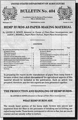

|  |
| |

When the USDA published Bulletin 404 in 1916, it used hemp pulp paper (as opposed to hemp fiber paper) for the first time to demonstrate the outstanding qualities of using hemp hurds for pulp rather than tree pulp. Not only would this reduce the cutting of trees, but it would also reduce the need for sulphuric acid compounds to break down tree pulp in the making of paper.
This bulletin is printed on paper manufactured from hemp hurds
run No. 143, which is recorded on page 29
The cover fragment reproduced above explains that the document has been printed on hemp pulp paper, although the cover itself was not printed on hemp pulp.
One acre of hemp equals 4.1 acres of forest land.
Cannabis Sativa (I.) at three months.
text of the first page of Bulletin No. 404:
Contribution from the Bureau of Plant Industry
WM. A. TAYLOR, Chief
PROFESSIONAL PAPER
Washington, D.C.
October 14, 1916
By LYSTER H. DEWEY, Botanist in Charge of Fiber-Plant Investigations, and
JASON L. MERRILL, Paper-Plant Chemist, Paper-Plant Investigations.
CONTENTS
| Page | Page | |||
| The production and handling of hemp hurds | The manufacture of paper from hemp hurds, | |||
| by Lyster H. Dewey: | by Jason L. Merrill: | |||
| What hemp hurds are | 1 | Introduction | 7 | |
| Pith, wood, and fiber | 2 | Factors justifying an investigation of hemp hurds | 8 | |
| Character of hurds affected by retting | 2 | Character of the material | 11 | |
| Proportion of hurds to fiber and yield per acre | 3 | Character of the tests | 12 | |
| Hurds available from machine-broken hemp | 3 | Operations involved in a test | 13 | |
| Present uses of hemp hurds | 4 | Description of tests | 16 | |
| Present supplies of hurds available | 5 | Comparison of tests and commercial practice | 21 | |
| Bailing for shipment | 5 | Physical tests of the papers produced | 24 | |
| Cost of bailing | 5 | Conclusions | 25 | |
| Summary | 6 |
In preparing the report on the manufacture of paper from hemp hurds it became eveident that a short discussion of the agricultural aspects of this material should be included in the publication. Such an article was prepared, therefore, and the two reports are here presented together.
By LESTER H. DEWEY, Botanist in Charge of Fiber-Plant Investigations
The woody inner portion of the hemp stalk, broken into pieces and separated from the fiber in the processes of breaking and scutching, are called hemp hurds. These hurds correspond to shives in flax, but are much coarser and are usually softer in texture.
page 1
the authorized on-line version of Jack Herer’s “The Emperor Wears No Clothes”
| previous page | Chapter 4 | next page |
|
 |
 |
 |
 |